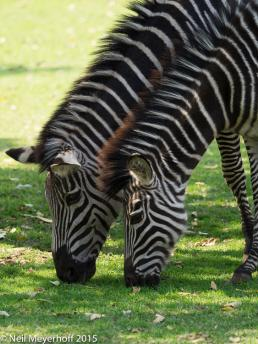
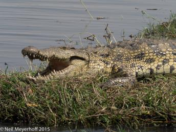
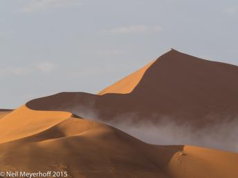

%1
The Royal Livingstone Hotel in Livingstone has some-what tame zebras who wander throughout the grounds eating the grass. I spent about twenty minutes following a group of four zebras around the pool area, taking about 75 photos. Olympus OMD, EM-1, 1/250@f4, 190mm, ISO 200 Click image to enlarge. |
|||
Crocodiles have no internal mechanism to cool themselves off, so they often lay on the banks of rivers and lakes, with their mouths open to remove heat from their bodies, Chobe National Park, Kasane. Olympus OMD EM-1, 1/640@f7.1, 210mm, ISO 200 Click image to enlarge. |
|||
The Big Daddy sand dune which many tourists climb in oder to get a higher view of the famous Sossusvlei sand dunes at the Namib-Naukluft National Park. Olympus OMD, EM-1, 1/250@f13, 190mm, ISO 400 Click image to enlarge. |
|||
In the late 1990's African penguins began coming ashore at Boulders' Beach, probably because their food supply migrated to this location. The residents living just above the beach were unhappy, but the site has become a very popular tourist site, and the beach was incorporated into Table Mountain National Park. The park officials built wooden walkways through the boulders so that tourists could get closer to the penguins, as seen here. Olympus OMD, EM-1, 1/320@f13, 112mm, ISO 200  Click image to enlarge. |
|||
Three Bhutanese girls are attending the Thangbi Mani tsechu (religious festival) held in a temple near Jakar, in Bhumthang district in central Bhutan. This panoramic photograph was taken with a Hasselblad X-pan camera. Click image to enlarge. |
|||
The temple of the Golden Pavilion, more formally know as the Kinkaku-ji, would seem to be an enduring symbol of the city of Kyoto, Japan, but the temple was in fact burned down in a 1950 arson attack. The vertical panoramic photograph was taken with a Hasselblad X-pan camera. Click image to enlarge. |
|||
During Holy Week, the men in Queretaro don hooded robes and walk from the Convent de la Santa Cruz through the streets in silent procession in memory of Jesus. This photograph was taken with a Hasselblad HD-31 camera using a 28mm lens. Click image to enlarge. |
|||
Every morning along Hoan Kiem Lake in central Hanoi, Vietnam, groups of men and women come out to practice Tai Chi, play badminton, or otherwise exercise. This group is being directed by a woman who plays music on a boom-box.  Click image to enlarge. |
|||
These gardens are in front of the castle at Spiez in central Switzerland. This photograph was taken with a Hasselblad HD-31 camera.  Click image to enlarge. |
|||
Plaza de Santo Domingo, part of the UNESCO World Heritage area of Quito, the capital of Ecuador. This photograph was taken with a Hasselblad HD-31 camera  Click image to enlarge. |
|||